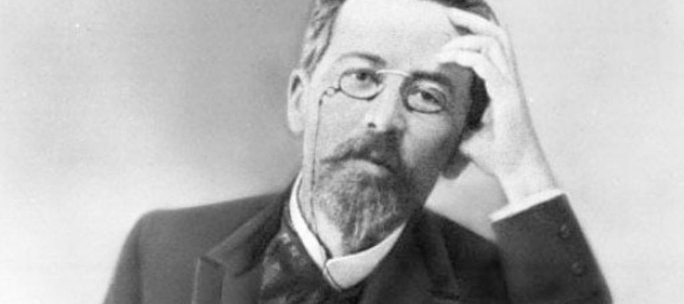

12. Чтобы перейти к непосредственному анализу пьес Чехова, попробуйте проанализировать взгляд Чехова на писательство в целом и на процесс написания пьесы в частности. Прокомментируйте следующие высказывания Антона Павловича, постаравшись в рассуждении предположить, что автор мог иметь в виду:
